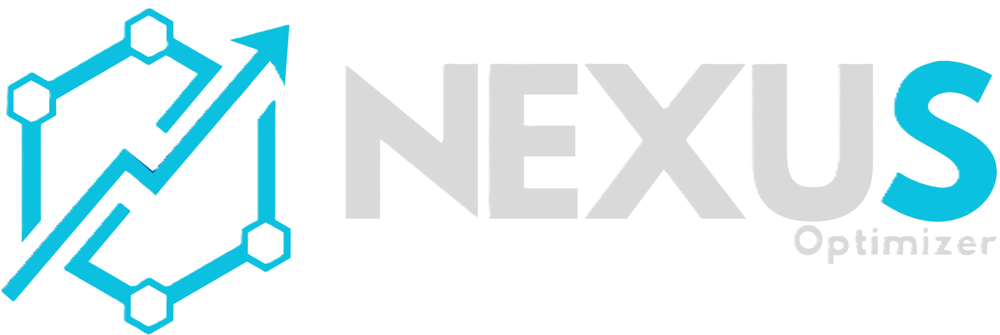

NexusOptimizer v2.1
Tu PC merece rendir al máximo
Una suite ligera e inteligente que limpia, optimiza y acelera tu Windows. Sin complicaciones, con backup del registro y opción de restaurar.
Descubrir más Ver planes y precios
¿Qué es NexusOptimizer?
Imagina que tu PC es un coche deportivo pero con el freno de mano puesto y el maletero lleno de cosas inútiles. NexusOptimizer es el mecánico que suelta el freno, vacía el maletero y ajusta el motor para que corras como nunca.
Con 27 módulos especializados, nuestra herramienta analiza, limpia y configura Windows para que aproveches cada byte de memoria y cada ciclo de CPU. Todo local, sin telemetría y con licencia flexible.
Sin anuncios y sin espionaje.
Cuatro pasos, un solo clic
Así de fácil es revivir tu PC
Escanea
Analiza tu sistema en busca de archivos basura, servicios inactivos y cuellos de botella.
Analiza
Te muestra qué está consumiendo más recursos y qué puedes mejorar.
Optimiza
Aplica los ajustes con un clic: libera RAM, limpia el disco, prioriza tu CPU.
Reinicia
Un reinicio aplica los cambios a nivel kernel. Notarás la diferencia al instante.
Módulos de optimización
27 herramientas especializadas para cada aspecto de tu sistema
Novedades de la v2.1
Lo último que se sumó sobre la base de los 27 módulos de la v2.0
Monitoreo en vivo
Uso de CPU, RAM y disco en tiempo real, con ícono en la bandeja del sistema y acciones rápidas.
Tema claro y oscuro
Cambiá la apariencia de toda la aplicación desde Ajustes; tu elección se recuerda.
Informes exportables
Generá reportes del estado de tu PC en HTML, PDF y CSV para guardarlos o compartirlos.
Optimizaciones programadas
Agendá tareas automáticas usando el Programador de Tareas de Windows.
Detector de juegos
Encuentra los juegos instalados en Steam, Epic Games y GOG y aplica ajustes específicos por juego.
Chequeo de XMP / EXPO
Detecta si tu RAM está corriendo a su velocidad nominal y te guía para activar el perfil si no es así.
Planes y precios
Elegí el plan que se adapta a vos o a tu empresa. Todas las funciones incluidas.
Escala de descuentos — Plan Empresas
Cuantas más PCs, menos pagás por equipo. El descuento se aplica automáticamente según el tramo.
| Cantidad de PCs | Descuento | Precio por PC / año |
|---|---|---|
| 1 a 4 | — | $12.400 ARS · $8.00 USD |
| 5 a 10 | 10% OFF | $11.100 ARS · $7.20 USD |
| 11 a 25 | 20% OFF | $9.900 ARS · $6.40 USD |
| 26 a 50 | 30% OFF | $8.700 ARS · $5.60 USD |
| Más de 50 | 40% OFF | $7.400 ARS · $4.80 USD o cotización a medida |
Los pagos se gestionan por transferencia bancaria o MercadoPago. Ver detalle de los planes o escribinos para coordinar.
Lo que dicen nuestros usuarios
Experiencias reales de personas que ya optimizaron su PC
Requisitos mínimos
NexusOptimizer es ligero y funciona en casi cualquier PC con Windows
Compatibilidad probada
Versiones de Windows donde NexusOptimizer ha sido testeado exhaustivamente
Windows 10 y 11 tienen compatibilidad asegurada. Otras versiones pueden funcionar, pero no están testeadas.
| Sistema Operativo | Soporte |
|---|
Nuestra historia
El camino de NexusOptimizer desde el primer commit hasta hoy